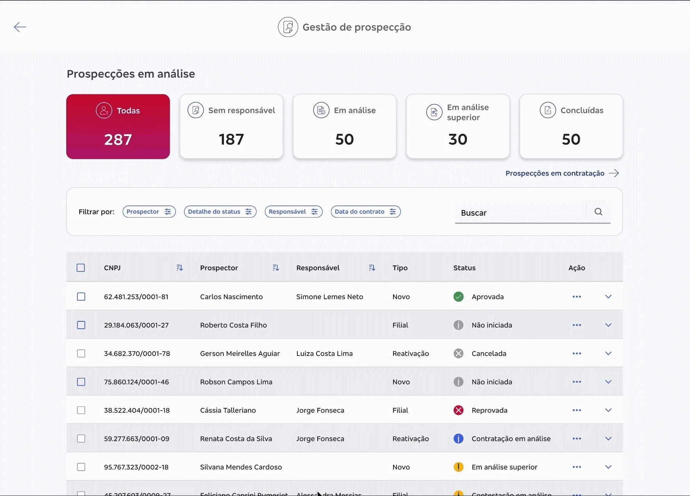
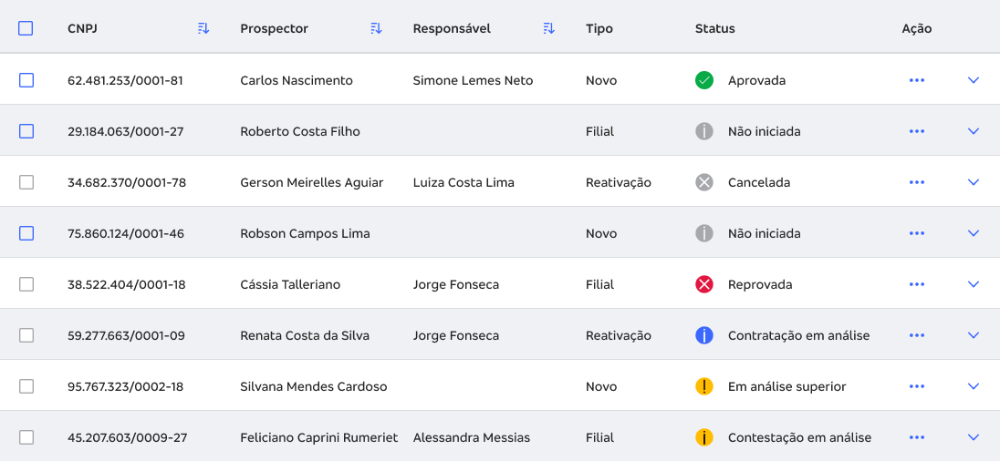
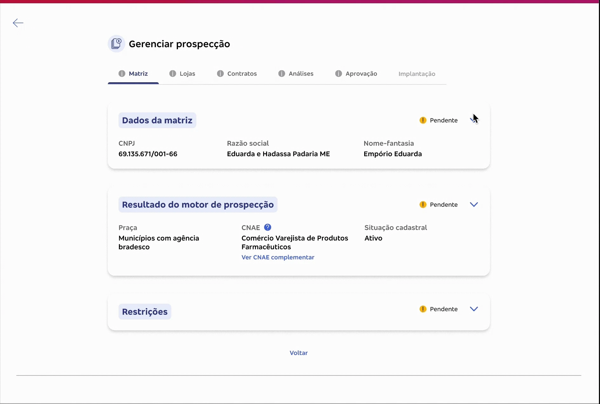

O Bradesco Expresso opera uma rede de mais de 41 mil correspondentes bancários, que atuam como pontos de atendimento bancário em diferentes regiões do país, principalmente em regiões muito remotas em que o sistema bancário tradicional tem dificuldade de chegar.
A prospecção de novos correspondentes é um ecossistema que envolve múltiplos atores, regras de negócio, análises operacionais e etapas de aprovação.
Ecosistema de prospecção — Bradesco Expresso
Time comercial
Em discovery
Prospector
Mobile · campo
Corban / Lead
Tablet/Smart POS · assinatura
Analista backoffice
Desktop · análise
Analista sênior
DescobertoDesktop · alçada
Quando entrei no projeto, parte importante dessa operação estava apoiada em uma plataforma legada e em processos que ainda carregavam etapas manuais e estruturas construídas ao longo do tempo. E até agora (outubro 2026), ele conta com duas frentes principais: o backoffice, que controla as aprovações através de uma plataforma legado fragmentada e o prospector, que até então é um processo majoritariamente analógico e manual. Em paralelo, descobrimos novos atores que precisam entrar no escopo e tem atuação direta no processo.
EVOLUÇÃO DE ESCOPO
INÍCIO / BRIEFING
2 atores
Prospector + Backoffice
Tablet como device
VIRADA 1 / DISCOVERY 1
Tablet ➡ Mobile-first
Smartphone pessoal do prospector na rua
campo invalidou premissa
VIRADA 2 / DISCOVERY 2
+3 atores surgem
Analista sênior, Corban, Agência de relacionamento
complexidade real emerge
ATUAL / HOJE
5+ atores · 4 frentes
Piloto em andamento
Escopo 3× maior que o briefing
Minha missão é reconstruir a experiência de uma operação complexa em uma nova plataforma, conectando as jornadas de prospector, backoffice e, posteriormente, outros atores do ecossistema.
Conduzo desde investigação e testes com usuários até arquitetura de fluxos e articulação de decisões com Produto e Tecnologia. Pra não perder de vista as necessidades e descobertas do ecossistema, construí um sistema de documentação de regras, decisões e hipóteses que funciona como a inteligência de produto para guiar melhorias e resolver gaps existentes.
Como a plataforma ainda está em piloto sem instrumentação, estruturo métricas e hipóteses a partir das evidências disponíveis (testes com usuários, estimativas do comercial, mapeamento de interações) para viabilizar mensuração quando a instrumentação chegar.
Pra não repetir os erros do processo anterior, construí um sistema de documentação viva que funciona como inteligência de produto: centraliza o que o time precisa saber pra tomar decisões.
PRODUCT INTELLIGENCE SYSTEM
BASE VIVAINSTRUMENTO 01
Jornadas dos atores
INSTRUMENTO 02
Histórico de decisões
SISTEMA CENTRAL
Product Intelligence System
INSTRUMENTO 03
Service Blueprint
INSTRUMENTO 05
Cenários futuros
INSTRUMENTO 04
Referências cruzadas
No último ciclo, a plataforma realizou 30 entregas em 5 frentes: gestão de prospecção (jornada end-to-end), aprovação via alçada superior, mar aberto, armazenamento GCC e API de instalação. Conduzo diretamente a experiência das duas primeiras frentes.
O primeiro ano foi mais negócio do que design (ou uma boa mistura dos dois): levantar regras, mapear processos, fazer discovery. A prospecção existia, mas era analógica: papel, deslocamento até agências, informação na cabeça das pessoas. Não havia plataforma, havia processo manual.
O processo que a plataforma substituiu
5 etapas com deslocamento à agência para 4 etapas direto do celular
ETAPA 01
Visita ao local
Deslocamento até o estabelecimento
ETAPA 02
Coleta em papel
Informações anotadas manualmente
ETAPA 03
Fotos avulsas
Câmera pessoal, sem vínculo
ETAPA 04
Ida à agência
Transcrever dados no sistema
× Eliminada no digital
ETAPA 05
Agência envia
Backoffice recebe pra análise
Cada prospecção exigia pelo menos 2-3 deslocamentos. As informações passavam por transcrição manual antes de chegar ao analista.
PCO / A transformação do processo
5 etapas → 4 etapas
sem deslocamento à agência
ETAPA 01
Consulta elegibilidade
Verifica antes de investir tempo
Antes da visita
ETAPA 02
Salva na carteira
Carteira digital do prospector
ETAPA 03
Visita única
Preenche + fotos pelo app
ETAPA 04
Envio direto
Backoffice recebe em tempo real
Antecipação de cenários Consulta elegibilidade
Na consulta de elegibilidade também entram verificações de duplicidade e pendências financeiras. Antes, esses problemas só apareciam na reprovação do backoffice, gerando um ciclo inteiro de retrabalho. Ao antecipar pro prospector, eliminamos esse ciclo.
A etapa da agência foi eliminada. O prospector resolve tudo pelo celular, em campo, numa visita só.
A jornada inteira tinha sido mapeada para tablet: era o dispositivo padrão do Expresso, e o time de negócio tinha certeza de que era o certo. O usuário final não participou dessa decisão. Quando finalmente conseguimos acesso ao prospector em campo, descobrimos que ele usava o celular pessoal. Um ano de protótipo construído para o device errado.
PCO / ANÁLISE DE PROSPECÇÃO
Suposição x realidade
Cenário imaginado
📱 Device: tablet corporativo
🏢 Contexto: escritório/loja
👤 Usuário: prospector apenas
o que era verdade
Device: celular pessoal + desktop
Contexto: rua, sol, conexão instável
Usuários: prospector + comercial + coordenador
Não foi incompetência, foi o custo de digitalizar um processo que ninguém conhecia por inteiro. Mas o débito de design estava criado, e precisava ser resolvido antes de escalar.💀💀💀
Tá, e como vocês resolveram isso?
Resolver débito de design não é só redesenhar: é negociar espaço na sprint. Aproveitamos uma janela de refatoração da plataforma e a carga fixa de 20% do tempo que o time reserva pra débitos técnicos. A estratégia foi encaixar as melhorias de UX dentro dessa janela, tratando débito de design com a mesma seriedade que débito técnico.
Como melhorar a exibição de uma tabela no mobile? Não usando tabela.
A solução foi substituir a tabela por cards que expõem a informação crítica direto: status, nome, próxima ação. O prospector bate o olho e age. De ~4 interações pra 1-2 por ação.
Eu tinha duas hipóteses para resolver um formulário gigante
Mas, conversando com desenvolvimento, identifiquei que a preocupação real não era só usabilidade: era perda de dados. O prospector preenche em campo, com conexão instável. Se a conexão cai no meio de um formulário monolítico, tudo se perde.
Hipótese A: Wizard
Salvamento por etapa
Progresso visível
Conexão instável → sem perda
Hipótese B: Accordion
Visualização melhor
Salvamento: tudo ou nada
Conexão cai → perde tudo
Depois que os dois débitos foram mapeados, a pergunta mudou:
Parte do trabalho de digitalizar um serviço analógico é encontrar oportunidades de melhorar o processo.
O que eu consigo melhorar? O que é possível automatizar?
E ai nos encontramos oportunidades que envolvem até processos de arrecadação. Por exemplo: em caso de reativação, uma pessoa que já foi um correspondente e quer voltar a ser, não pode em caso de pendências financeiras com o banco. Como esse processo acontece hoje? O prospector faz a prospecção e só descobrimos pendências quando isso vai pra análise do backoffice e ele tem que devolver pro prospector para que o prospector resolva. E se nós invertermos o processo? O prospector é avisado logo no inicio que existem essas pendências, incentivamos a arrecadação e a regularização para que só depois isso vá para o backoffice.
E melhorar o processo vai além de criar uma tela.
Substituir plataformas legadas é descobrir, a cada semana, mais um sistema interligado, mais uma gambiarra operacional que sustentava o processo. O backoffice do PCO não foi diferente: cenários novos apareciam antes mesmo do lançamento oficial, e o escopo mudava em tempo real.
Escolhi dividir essa jornada em duas partes: o que foi reconstruído do legado (esta página) e o que precisou ser ajustado e foi validado por testes (Parte II).
No legado, a duplicidade de uma prospecção era comunicada por um farol de quatro cores. Dois problemas graves, e nenhum deles de estética: a semântica das cores não era evidente, e o check/X estava invertido — uma inversão cognitiva que obrigava o analista a traduzir "o certo aqui é o errado" toda vez.

Ou seja, o sinal visual não correspondia ao modelo mental de quem usava. Substituí o farol por uma comparação direta entre a nova prospecção × o correspondente existente, campo a campo. O analista deixou de interpretar uma "temperatura de risco" e passou a investigar evidências concretas.
Essa inteligência também migrou para o início da jornada do prospector: a consulta de elegibilidade já antecipa duplicidades antes da visita, reduzindo o ciclo de análise do backoffice.
Com o produto maduro, ficou claro que o analista de backoffice precisava enxergar exatamente o que o prospector enxerga — não para editar, mas para entender o contexto da prospecção que estava analisando.
O PO queria colocar essa visão num módulo de sistema separado. Defendi que não era módulo novo: era outra visão da mesma prospecção, e pertencia à gestão de prospecção como um switch. O time escolheu o switch de visão.
E aqui a reconstrução corrigiu um erro do legado: lá, o backoffice conseguia interagir com a prospecção, comportamento quebrado que nunca deveria existir. Na nova plataforma ele vê tudo — campos preenchidos, campos que faltam, o que tem erro — mas não executa nenhuma ação. A melhor forma de evitar a edição acidental é remover a possibilidade dela existir.
A interface do legado exibia dados, mas não ajudava o analista a interpretá-los. O número estava lá; o significado, não.
Trouxe à superfície o histórico que já existia no sistema mas ficava enterrado: reativação, filial, comportamento anterior do estabelecimento. O dado que antes precisava ser caçado passou a aparecer no momento em que importa para a decisão.
A distribuição de prospecções entre analistas era manual. A proposta era automatizá-la — mas o coordenador resistiu, porque uma automação cega ignoraria o contexto que ele conhecia de cada analista.
A saída foi uma automação parcial, com parâmetros: a máquina distribui segundo regras, e o coordenador mantém o controle de ajuste sobre os casos que fogem do padrão.
A lição ficou: automação que ignora contexto gera resistência. Automação que preserva o julgamento humano onde ele importa, não.
Pensei a integração de IA em duas camadas. Na coleta, feedback em tempo real para alimentar o sistema com o que o analista decide e por quê. Na análise, uma triagem assistida por IA que organiza o trabalho — sempre com human-in-the-loop, o analista como decisor final.
Status: proposta validada com o time, wireframes entregues como input para o roadmap de IA. Aguardando priorização.
No começo da jornada, o analista precisa triar: o que não tem responsável, o que está em análise superior, o que é histórico. No legado, isso eram abas. Troquei por cards com contadores clicáveis, componentes de dashboard. Em vez de ler abas, o analista bate o olho num painel e vê os volumes de cada fila. Mesma filosofia dos cards do prospector: transformar dado em unidade de decisão escaneável.

Na mesma linha, tenho a proposta de trocar a tabela de prospecções por uma visão de cards. Hoje cada prospecção é uma linha horizontal comprida (CNPJ, prospector, responsável, status). A proposta traz uma miniatura da foto da fachada, a razão social, a localização e a distância num único bloco — a informação inteira dentro do campo de visão, sem varredura horizontal. Mesmo princípio do Safer e do prospector.
E aqui vale o meu recado sobre tabelas, que você vai me ver repetir: eu não sou contra tabela. Sou contra tabela como resposta automática. Ela é ótima pra comparar muitos itens por métrica, e péssima pra decisão rápida com contexto visual. O problema não é a ferramenta, é usá-la no piloto automático pra um problema que ela não resolve. (Se quiser o rant completo, ele mora no Manifesto Anti-Tabelas — te aviso quando estiver publicado.)


Quando o analista abre uma prospecção, ele não segue um caminho reto do começo ao fim. Ele vai e volta: consulta um dado da Matriz, checa uma foto na aba de Lojas, volta pra Matriz, confere um contrato. Por isso a jornada é navegada por abas, não por wizard. Wizard linear obrigaria uma ordem que o trabalho real não tem.
A aba Matriz é a mais pesada do sistema: dados da Receita Federal, endereço, dados bancários, representantes, faturamento, saúde financeira, análise de risco, restrições. Tudo junto, vira um paredão.
A solução foi agrupar por assunto em acordeões temáticos: um acordeão de faturamento, um de risco, um de dados cadastrais, e assim por diante. O analista abre o que precisa consultar e mantém o resto recolhido. Domar densidade não é esconder informação, é dar ao usuário o controle de quando cada bloco aparece. Pequenas pílulas de conteúdo, sem assustar com a densidade toda de uma vez.
O histórico de uma prospecção é, na essência, um diálogo: o prospector envia, o analista devolve, o prospector corrige, e por aí vai. Então desenhei a aba Análises com o modelo mental de chat. Os atores externos (prospector, motor de prospecção) aparecem à esquerda; as devolutivas do analista, à direita. O motor de prospecção abre a thread como análise inicial. Um processo burocrático ganhou a legibilidade de uma conversa de chat, algo que qualquer pessoa sabe ler sem treino.

Aqui está uma proposta que ainda vai pra V2, mas que mostra um padrão que se repete no meu trabalho. Hoje o analista percorre todas as abas e, só no final, vai à aba de Aprovação apertar "reprovar" e caçar a opção certa no meio de um monte de checkbox. É trabalho duplicado: ele já sabia lá atrás que ia reprovar por causa do faturamento, mas tem que segurar a decisão até o fim.
A proposta é distribuir a decisão. Botões de aprovar/reprovar em cada seção: se o problema está no dado da Receita, o analista resolve ali, no momento em que vê. A aba de Aprovação deixa de ser onde tudo acontece e vira tela de conferência: o analista revisa as decisões que já tomou pelo caminho e confirma.
É a mesma lógica da pré-tela de similaridade que você vai ver adiante: informação de risco primeiro, decisão perto de onde ela nasce. Quando o mesmo princípio resolve dois problemas diferentes no mesmo produto, ele deixa de ser solução pontual e vira jeito de pensar.
Essa é a reconstrução de que mais me orgulho no backoffice. E é reconstrução, não redesign: a função existia no sistema legado com propósito parecido, mas foi refeita do zero para a nova plataforma. Não peguei uma tela bonita pra deixar mais bonita: parti de um sistema em produção, com lógica de negócio real, que estava confundindo quem dependia dele.
O legado marcava a criticidade da prospecção com bolinhas coloridas (amarelo, laranja, verde) indicando quantos itens eram similares e o nível de suspeita. E comparava os dados com check e X.
Dois problemas graves, e não são de estética:
A cor era o único indicador. Criticidade comunicada só por cor é uma falha de acessibilidade: quem não distingue as cores fica sem a informação. Cor pode reforçar, mas não pode ser a única explicação.
O check e o X estavam invertidos. No comparativo do legado, o dado que estava igual (ou seja, suspeito) aparecia com um check verde ✓, e o dado diferente (ok) aparecia com um X. Inversão completa do modelo mental de todo mundo. Num contexto onde o erro de leitura deixa passar fraude ou reprova um estabelecimento legítimo, o analista tinha que parar e pensar "espera, o certo aqui é o errado" toda vez. Risco cognitivo real, embutido na interface.
Antes de desenhar qualquer tela, estressei a jornada com mais de 25 perguntas — uma das coisas que motivou a criação do sistema de inteligência de produto. E aqui descobri uma coisa que não estava documentada em lugar nenhum: o motor de similaridade e o motor de elegibilidade são sistemas distintos, que rodam em momentos diferentes, informação que impactava direto o handoff com a engenharia.
Exemplos de perguntas que levei pro discovery
· O analista pode aprovar uma prospecção mesmo com alta similaridade? Quem tem essa alçada?
· Já aconteceu de uma fraude real passar pela checagem? O que falhou?
· O que acontece com um falso positivo — quanto retrabalho ele gera pro prospector?
Saiu o farol, entrou o comparativo lado a lado. Prospecção atual à esquerda, loja existente à direita, campo a campo. O analista não precisa mais interpretar "o que raios significa a bolinha colorida": ele vê o que é igual e decide.
As tags carregam o peso que faltava. Campos idênticos ganham a tag "Idêntico"; campos parecidos, a tag "Similar". Isso resolve um problema antigo: no legado, sócio em comum valia o mesmo que CEP igual. Agora a gradação é explícita, com texto além da cor — sócio idêntico e endereço só parecido não pesam igual, e a interface diz isso com palavra, não só com cor.
As fotos entram na comparação. O analista vê os dois estabelecimentos lado a lado, não só os dados. Porque identificar se são o mesmo lugar é, muitas vezes, mais rápido pelo olho do que pela leitura de um CNPJ de catorze dígitos. (Não tenho o dado instrumentado pra provar isso ainda: é hipótese fundamentada em observação de campo, e virou um gap no mapa de inteligência esperando validação.)
O caso mais comum de similaridade não é fraude. É transferência de ponto comercial: alguém vendeu o estabelecimento e o novo dono quer virar correspondente. Operação legítima, que o sistema legado tratava como suspeita e mandava pro mesmo funil de retrabalho.
Isso muda tudo no design. Se eu desenho a tela só pro caso dramático (fraude), eu prejudico o caso frequente (transferência legítima). Desenhar pro caso comum, sem baixar a guarda pro caso raro, é o que separa uma tela que assusta de uma que ajuda a decidir. E tem uma camada de negócio: quando alguém tenta "adiantar o processo" por fora, isso vira risco jurídico pro banco. A pré-checagem no lugar certo protege o banco antes do problema existir.
Decidi que, quando uma prospecção tem flag de similaridade, o analista vê a tela de duplicidade antes das abas normais. Se a prospecção vai ser reprovada por duplicidade, ele descobre antes de investir atenção em Matriz, Lojas e Contratos. O tempo que ele economiza é custo operacional que o banco economiza.
Considerei três posicionamentos e documentei por que descartei dois: alert simples no topo (não permite decidir loja por loja), inline na aba Lojas (mistura dois modos de pensar — validar foto e investigar fraude são cabeças diferentes), e painel lateral (funciona como navegador, não como tela de decisão). A pré-tela venceu, e foi aprovada por unanimidade pelo time.
Estendi a lógica pra ponta do prospector: uma pré-checagem de similaridade antes dele enviar a prospecção pra análise. Se ele já sabe que tem flag, justifica na hora — usando o campo de defesa que já existe. A justificativa viaja junto, e o analista tem contexto antes da primeira análise. Resultado: pelo menos um ciclo de reprovação-contestação eliminado, e um deslocamento a menos do prospector até a loja pra corrigir algo que dava pra resolver na origem. E se a justificativa for algo mapeado que já vai ser reprovado (como o comportamento de venda de um ponto comercial), a gente avisa antes mesmo dele enviar.
Com dois anos de produto, descobri (na melhor tradição da descoberta no ódio) que o analista de backoffice precisava ver exatamente o que o prospector vê. Não pra editar, mas pra entender o contexto da prospecção que estava analisando, ou caso precisasse oferecer suporte a um prospector.
O tech lead e o PO queriam colocar essa visão fora da gestão de prospecção, num painel de sistema separado onde o backoffice já acessa várias coisas da plataforma. Pra mim não fazia sentido: não é um módulo novo, é só outra visão da mesma prospecção. Discuti bastante pra defender que isso pertencia à gestão de prospecção, como um switch — o analista está na visão dele, clica, e passa pra ver o que o prospector vê. Ganhei a discussão. Hoje existe um link que faz essa troca de visão, e ela está aprovada e em esteira. (Modéstia à parte, eles gostaram bastante da proposta final e foram obrigados a admitir que eu estava certa 💅🏻)
E aqui a reconstrução corrigiu um erro do legado: lá, o backoffice conseguia interagir com a prospecção, o que nunca deveria acontecer, era só comportamento quebrado da plataforma. Na nova, ele vê tudo (campos preenchidos, campos que faltam, o que tem erro), mas não tem nenhuma ação real ali dentro. É a DD-01 na prática: visão espelhada, somente leitura. A melhor forma de evitar a edição acidental é remover a possibilidade dela existir.
Duas decisões desta plataforma são, na essência, de conteúdo. E conteúdo neste produto já foi literalmente o meu trabalho: atuei como UX Writer do projeto antes de ser a designer dele, o que me deixa confortável pra defender esse tipo de decisão com lastro, não com achismo.
"Pendente", nunca "Reprovada" (DD-02). Na visão do prospector, uma prospecção reprovada pelo backoffice nunca aparece como "Reprovada". Aparece como "Pendente" ou "Dados pendentes". "Reprovada" sugere fim de linha; a maioria das reprovações é recuperável com um ajuste simples. "Pendente" convida à ação em vez de sugerir desistência. Essa decisão já existia na prática quando cheguei, mas ninguém tinha registrado o porquê. Quando foi questionada numa reunião, foi necessário muito esforço para defender e relembrar o porquê da decisão, e só foi possível porque eu já estava no projeto como UX Writer (lá em 1900 e bolinha). Recuperei a justificativa e formalizei no sistema. Agora a próxima pessoa que questionar encontra resposta, sem esforço e com histórico.
O status "Cancelada" e o gap que continua aberto (DD-03). O prospector pode cancelar uma prospecção, liberando uma das 10 vagas da carteira. Durante uma apresentação, a Cássia (analista de backoffice) apontou que o status "cancelada" não aparece nos relatórios do backoffice — ou seja, o custo de cada prospecção cancelada é invisível pra gestão. Esse gap ainda não foi resolvido, por questão de prioridade. Mas não foi esquecido: está registrado no mapa de inteligência do produto, com ID, esperando o próximo discovery que tocar nesse fluxo.
A ideia inicial era modesta… até singela: eu queria organizar informações pra um discovery. Só isso.
O que acendeu o alerta foi descobrir que o Time Comercial ia entrar no radar em breve, como uma terceira visão do produto. E até pouco tempo atrás, eu nem sabia da existência desse time. Então, eu pensei: como é que eu consigo blindar o time desse tipo de situação? Como eu consigo mapear tudo que eu já sei sobre o PCO, todas as dores, todos os pontos cegos, num lugar só, antes de mais uma frente chegar?
Porque a gente já tinha feito milhares de FigJams. E FigJam, no dia a dia, some. Ninguém volta nele. Vira aquele arquivo com trocentas páginas que todo mundo jura que vai consultar e ninguém consulta. Eu não queria fazer mais um.
Só que quanto mais eu estressava as informações, mais eu percebia que não era caso de copiar e colar o que já existia. Boa parte do que eu sabia não estava organizado em lugar nenhum, e o que estava, estava espalhado. Tive que estressar tudo de novo, do zero.
Teve uma história que me marcou e que virou o argumento central desse sistema.
Me contaram de um caso onde uma pessoa que dominava um processo faleceu. E o processo morreu junto com ela. Ninguém mais sabia como aquilo funcionava, então ninguém mais pôde mexer. O sistema virou intocável por falta de conhecimento, não por decisão.
Hoje eu estou no produto desde o começo. Eu sou a pessoa que lembra por que aquela decisão foi tomada em 2023. Mas e se eu não estivesse? E se eu saísse amanhã?
Documentar deixou de ser sobre organização e virou sobre resiliência. O sistema existe pra que o conhecimento do produto não more na cabeça de ninguém, inclusive na minha. (Sim, isso significa que eu me tornei substituível de propósito. Acho que é a coisa mais sênior que eu já fiz.)
Aqui está o teste real: o sistema não foi um exercício bonito, ele mudou o que eu sabia sobre o produto.
Descobriu o quinto ator. O briefing dizia dois. Enquanto eu mapeava as jornadas e cruzava informações, apareceram cinco. O Analista Sênior, que ninguém tinha mencionado formalmente, saiu de um comentário casual e virou um ator com fila própria, gaps próprios e nenhuma documentação de SLA.
Recuperou o porquê de decisões que já existiam. A decisão de chamar de "Pendente" em vez de "Reprovada" estava lá na prática, mas o motivo tinha se perdido. Quando foi questionada, foi necessário muito esforço para defender e relembrar o porquê da decisão, e só foi possível porque eu já estava no projeto como UX Writer (lá em 1900 e bolinha). Recuperei a justificativa e formalizei no sistema. Agora a próxima pessoa que questionar encontra resposta, sem esforço e com histórico.
Capturou os gaps que a gente descobre no meio da conversa. O status "cancelada" que não aparece no relatório, apontado pela Cássia (analista de backoffice) durante uma apresentação. Não resolvido até hoje, por prioridade. Mas registrado, com ID, esperando o discovery que tocar nesse fluxo.
Assumiu o que a gente não sabe. São 25 gaps mapeados e 19 regras de negócio, sendo 7 confirmadas e 12 ainda em aberto. Esse número em aberto não é vergonha, é o retrato honesto de um produto que digitalizou um processo que nunca esteve documentado. O valor não é ter todas as respostas. É saber exatamente quais perguntas ainda estão de pé.
Definiu métricas antes de ter dados. Nove KPIs, todos marcados com o status mais honesto possível: "Hoje: não sabemos". Qual o custo médio pra aprovar uma prospecção (os CAPs)? Quantos contatos de suporte são gerados por falta de notificação proativa? A empresa não consegue responder. Formatar como pergunta em aberto cria urgência de instrumentação de um jeito que uma meta inventada nunca criaria.
O que separa esse sistema de mais uma documentação é que ele gera coisa. Estou construindo dentro dele um gerador de plano de pesquisa: você seleciona os gaps que quer investigar, agrupa por tema, e ele monta os roteiros de entrevista com objetivo de sessão e perfil sugerido de participante, com status pra acompanhar conforme a pesquisa avança.
Ou seja: o mapa de dores vira insumo de discovery automaticamente. Em vez de eu chegar numa reunião tentando lembrar "a gente já falou disso? quando?", eu chego com o roteiro pronto, montado a partir do que já está registrado.


O que nasceu como uma necessidade do PCO acabou virando uma ferramenta com identidade própria, versionamento e escala pra outros produtos. Já apliquei a mesma estrutura no DW Safer, e tenho um template genérico e replicável pra comunidade (com dados fictícios, porque dado de produto real não sai de casa).
📁 Quer ver o sistema por dentro? Case próprio: telas, construção e como replicar.ABRIR ▸